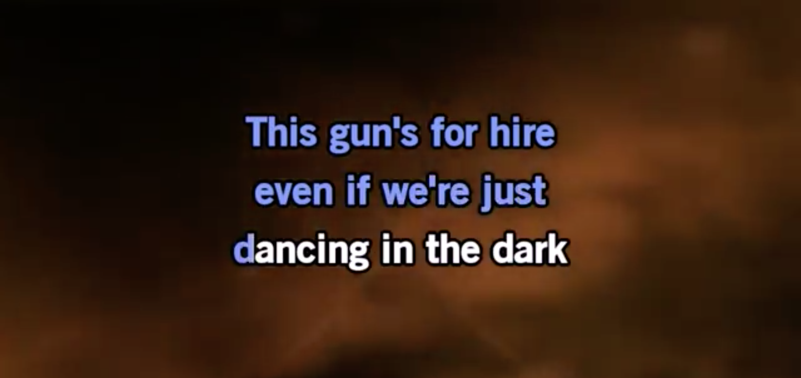

How it Works
About our Mission
Try it Out!
Exquisite Corpse*
+

Karoke
+
Community
=
*London's Tate Modern
describes
an Exquisite Corpse in short and sweet terms: "Cadavre exquis (exquisite corpse) is a collaborative drawing approach first used by surrealist artists to create bizarre and intuitive drawings."